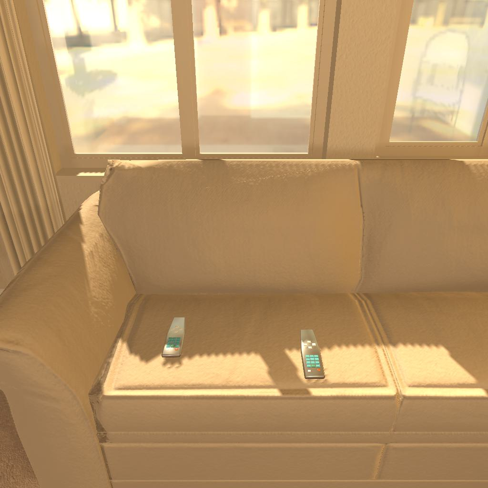

---------------------------------------------------------task: 7---------------------------------------------------------
--------------------------------------------------------------------------------------------------------------------------------------------------------------------
--------------------------------------------------------------------------------------------------------------------------------------------------------------------
Step:--------------------------------------------------------------------------0-------------------------------------------------------------------------------
----------------------------------------
VLM Prompt:
Image1:
**Instruction**
1. Analyze the provided images to identify all visible household objects and compare the difference between images (e.h. whether the object is opened or not and taken on hand or not), focusing on those relevant to the task description "put a creditcard in coffeetable."
2. Use the analysis of images and the task hint "The agent must find an object of the desired type, pick it up, find the correct location to place it, and put it down there." to answer the question: what is the most reasonable action in the choices for the task description "put a creditcard in coffeetable"?
3. Decide and write the answer using the template: The answer is: (i): , where i is the real number. If there is no desired object in images, search every place based on **Initial Observation** to find the object. And if no one is exactly correct, choose a similar answer.
**Initial Observation**
You are in the middle of a room. Looking quickly around you, you can see armchair (1-2), dresser (1), garbagecan (1), cabinet (1-4), drawer (1-4), coffeetable (1), sidetable (1), sofa (1)
**Answer Choices**
(1): go to armchair 1
(2): go to armchair 2
(3): go to dresser 1
(4): go to garbagecan 1
(5): go to cabinet 1
(6): go to drawer 1
(7): go to drawer 2
(8): go to cabinet 2
(9): go to drawer 3
(10): go to cabinet 3
(11): go to drawer 4
(12): go to cabinet 4
(13): go to coffeetable 1
(14): go to sidetable 1
(15): go to sofa 1
**Answer**
Let's think step by step by following the instructions.
----------------------------------------
----------------------------------------
Original Response:
Image 1 shows two objects that appear to be remote controls on the sofa. There is no visible credit card in the image. Since the task is to put a credit card on the coffee table, we need to find a credit card first.
**Initial Observation**
According to the initial observation, we are in the middle of a room with various pieces of furniture such as an armchair, dresser, garbage can, cabinet, drawer, coffee table, side table, and sofa. The credit card could potentially be in or on any of these objects.
**Answer Choices**
Based on the task description and initial observation, the most reasonable action to find a credit card would be to search places where a credit card is likely to be kept or placed, such as in a drawer or on a table.
The answer is: (6): go to drawer 1. Drawer 1 seems like a common place where one might keep a credit card, so it would be a reasonable first place to search. If the credit card is not found there, the agent can continue searching the other drawers, cabinets, or tables as necessary.
----------------------------------------
----------------------------------------
>>> Refine Original VLM Response and Get Pure Action: go to drawer 1
----------------------------------------
-----------------------------------------------------------------
Running time: 19.30005121231079 seconds
Total Money: 2.5560900000000006
-----------------------------------------------------------------
-----------------------------------------------------------------
Text Observation:You arrive at loc 5. The drawer 1 is closed.
-----------------------------------------------------------------
UNSUCCEED